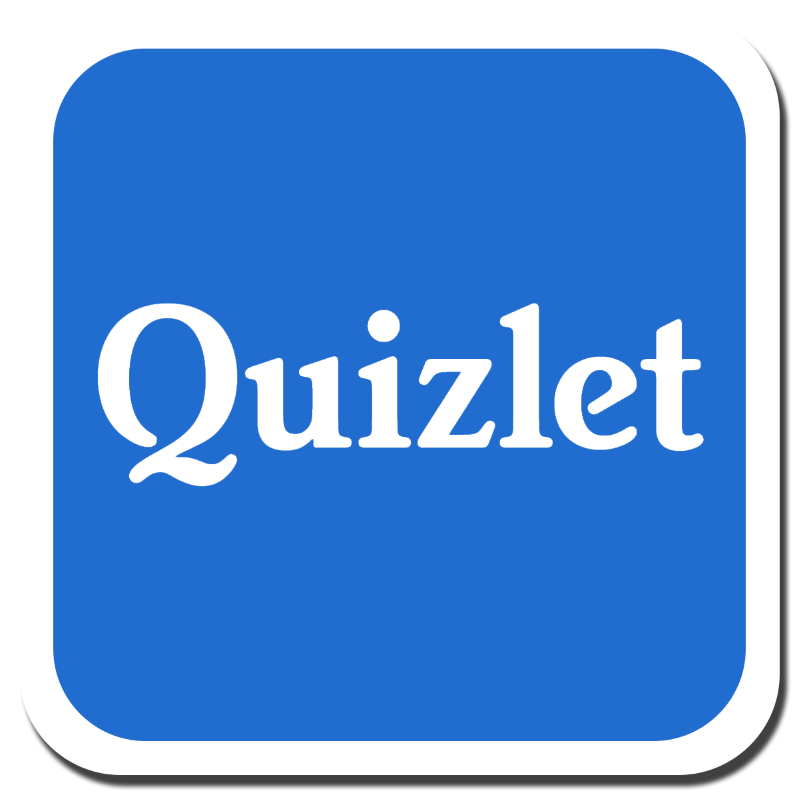
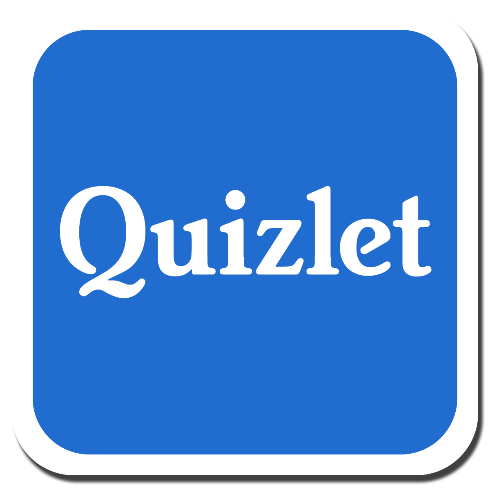
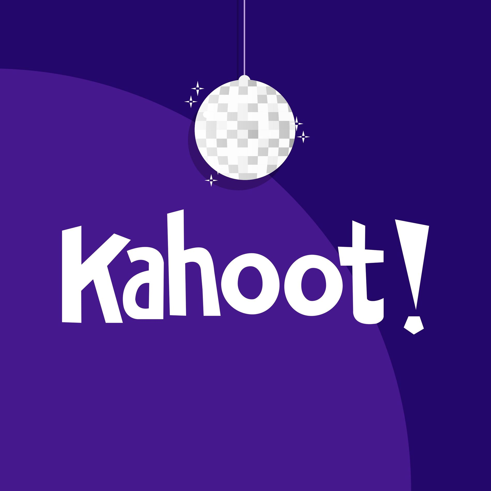
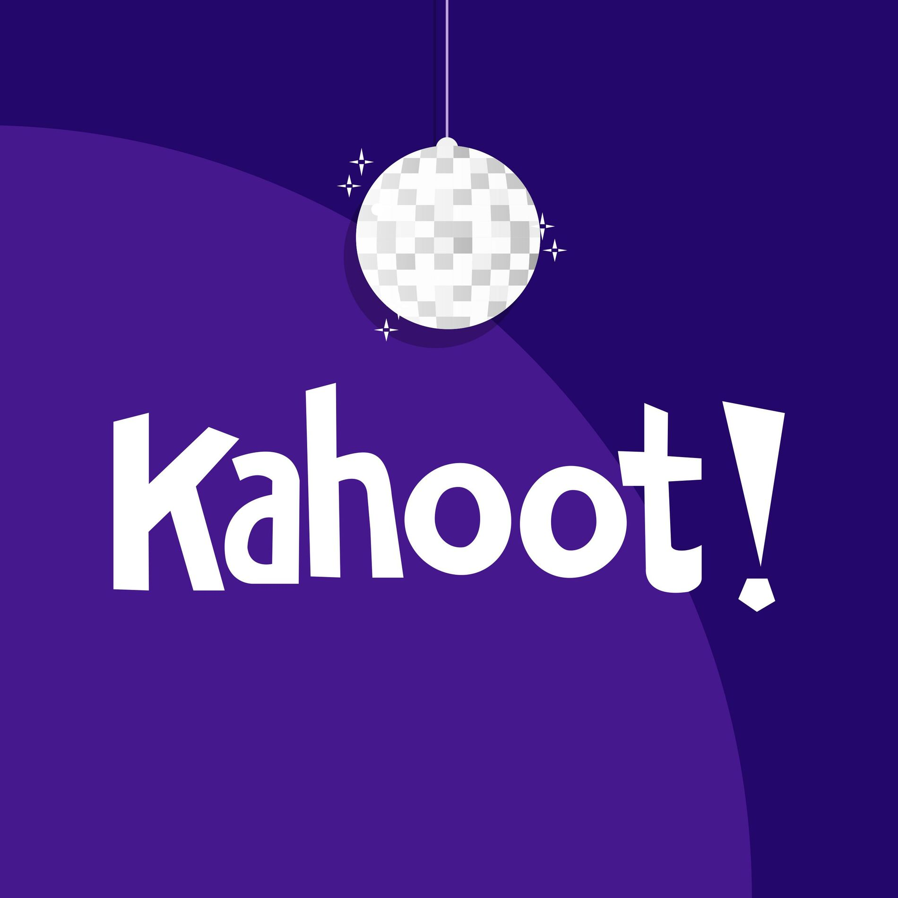

Приложения на ИИ в образованието
Изкуственият интелект вече играе важна роля в образованието, предоставяйки нови възможности за учители и ученици. Той предизвиква както интерес, така и дискусии относно функцията си в класната стая.
Видове изкуствен интелект
- Слаб изкуствен интелект (Narrow AI): Системи, проектирани да извършват специфични задачи, например чатботове като ChatGPT или автоматизирани инструменти за оценка на тестове.
- Силен изкуствен интелект (AGI): Хипотетична форма на ИИ, способна да изпълнява всяка интелектуална задача, която може да извърши човек.
- Изкуствен суперинтелект: ИИ, който превъзхожда човешките способности във всички области – предмет на научна фантастика.
Приложение на изкуствен интелект в образованието
- Машинно обучение: Анализира данни и предлага персонализирани решения.
- Обработка на естествен език (NLP): Позволява на ИИ да разбира и генерира човешки език.
- Компютърно зрение: Разпознава и анализира визуална информация.
- Роботика: Създава интерактивни учебни помощници.
Инструменти за учители, базирани на ИИ
- ChatGPT: Учебни планове, презентации и тестове.
- Canva Magic Design: Визуални материали и уроци.
- Quizlet: Персонализирани куизове и анализ на напредък.
- Grammarly: Проверка на граматика и писмена комуникация.
- Kahoot!: Интерактивни куизове с резултати.

 

 
